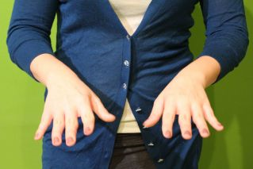
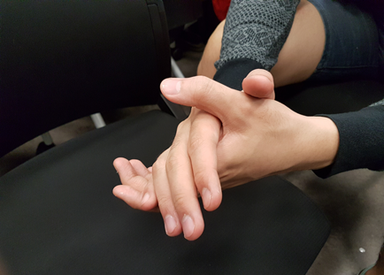
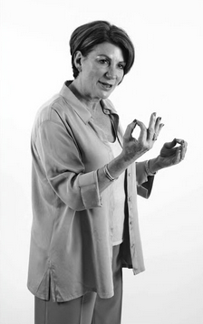
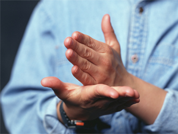
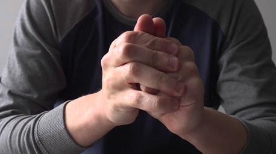
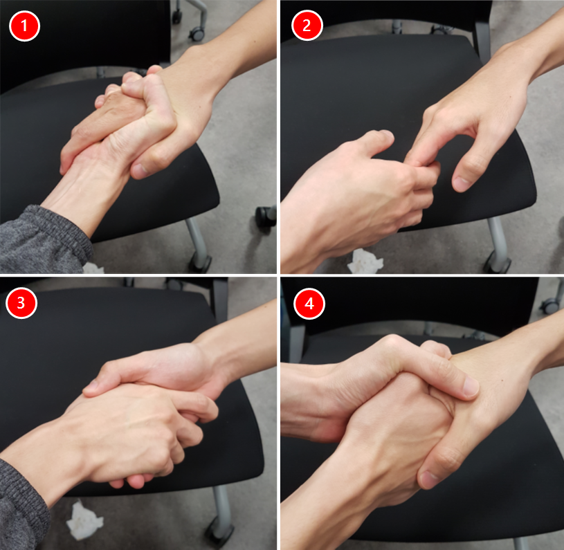

Introduction
- Anyone who pays attention to your hand gesture can tell what you are really thinking, felling and intending
- This topic let you discover how you can use your hands to add substance to support your spoken words
- How to position your hand to convey authority and dominance as well as openness and submission
- Become aware of the tell tale signs that the hands finges unconsciously reveal
Open Palm
Open hand gesture is a sign of trustworthiness and being non-threaten to others, it a helpful to establishing rapport with another person. When a person shows one or both palm faced up, it is a sign of honesty.
Facing Down Palm
As opposed to up facing palm, downward facing palm demonstrate projecting of power and authority used for giving order. An example is when a person who want another person to conciliation, his/her hands will be facing down.

Rubbing Palm
Rubbing palm together signalling a positive expectation. A quick hand rub by another person indicates excitement, pleasure and enthusiasm, while a slow hand rub can indicate crafty that will make you feel uneasy.

Precise Grip Fingers
When you want to express something that is accurate, press your fingers and thumb together with your palm facing toward you. This will reinforce your listener that your statement is with precision and accuracy.

Power Chop
The power chop gesture conveys clarity and conviction. Your listener will take you seriously, as the gesture shows that you are feeling strong and not going to accept any contractions.

Clenched Hands
- Showing sign of scared, nervous or holding back negative emotion
- The stronger the emotion the tighter the clench
- The higher the hand held in clenched position the stronger the negative mood. Example of someone in the meeting clenching his/her hand in front of the face with elbow resting on the table, this indicates sign of holding back

Steeple
- Steeple fingers demonstrates confident attitude
- The raised steeple, voicing thoughts and opinions when fingers raised in front of chest. Using it judiciously, as it can convey arrogant if take to extreme
- The lowered steeple, showing signs of interests and ready to respond when listening
Hand Shakes
- 1. The Bone Cruncher
Overly aggressive attitudes to compensate for ineffectualness - 2. The Wet Fish
Limp uncommitted handshake show signs of self-important and aloof - 3. The Power Shake
Giving a handshake with hand facing down. To demonstrate that you are strong and in control - 4. The Double-hander
Portray sincerity and honesty as well as gaining control of the interaction

Hand Shakes
-
The Left Side Advantage
- When taking a photos, chances are the person standing of the right of the other during handshake is perceived as the dominant, as that person hand is in the upper position appear in the photograph
- To increase the power play, place left hand on the other person back when hand shaking
Hand on Face
On The Nose
- Showing sign of telling lies, dishonest thoughts or felling of self-doubts
- Indicates boredom, disinterest and fatigue
- Showing signs of thinking with thumb under the chin and index finger pointing up the side